3. Computer Aided Design¶
Assignment - Evaluate 2D and 3D software¶
- Model (raster, vector, 2D, 3D, render, animate, simulate, ...) a possible final project, compress your images and videos, and post it on your class page
2D software - Raster and Vector¶
Research¶
Source: Raster (or bitmap) images are described by an array or map of bits within a rectangular grid of pixels or dots. Vector images are described by lines, shapes, and other graphic image components stored in a format that incorporates geometric formulas for rendering the image elements.
-
Raster
At 100% the bitmap, or raster, version of the image looks almost the same as the vector version. Notice that as soon as the raster version is scaled, the pixels on the edge begin to show and the edges no longer look smooth.
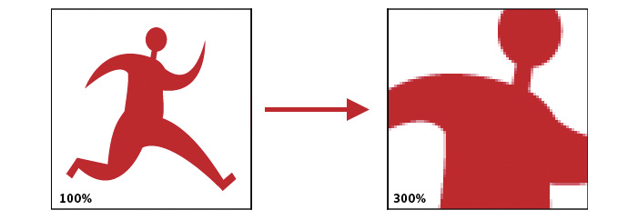
-
Vector
The vector image is created by defining points and curves. (This vector image was created using Adobe Illustrator.) When vector graphics are scaled, the edges remain crisp and sharp no matter the size.
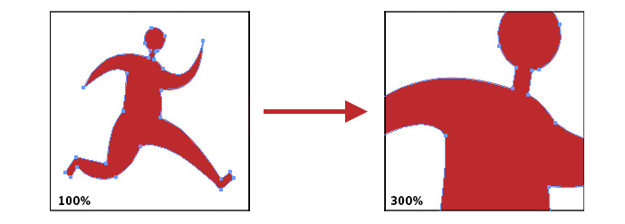
Inkscape¶
With this software it's possible to convert images into vectors, so we can use them in operations of CNC (.dxf), laser cutter (.dxf or .pdf) and vinyl plotter (.svg).
How to raster an image:
-
Choose a desired image and import it (shortcut Ctrl+i) in Inkscape.
-
Click on right mouse button and select
Rasterizar bitmap....
-
There're many ways to rasterize the image. I think the best way is choosing the option Colors, and type how many of them (im my case two). As a result, the preview is similar to the real image.
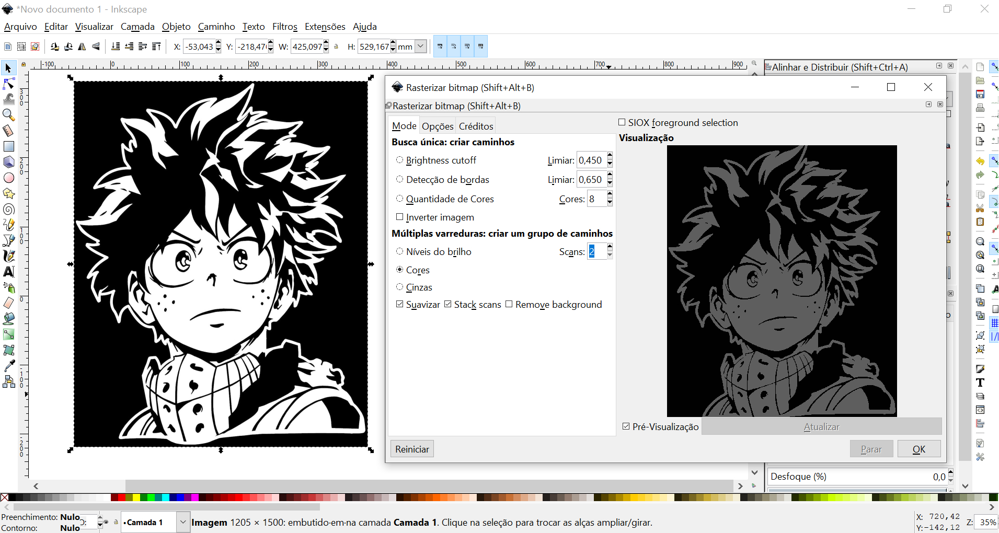
-
Click and drag the image to the side. With the rasterized selected, go to tools bar Objeto > Preenchimento e Contorno.
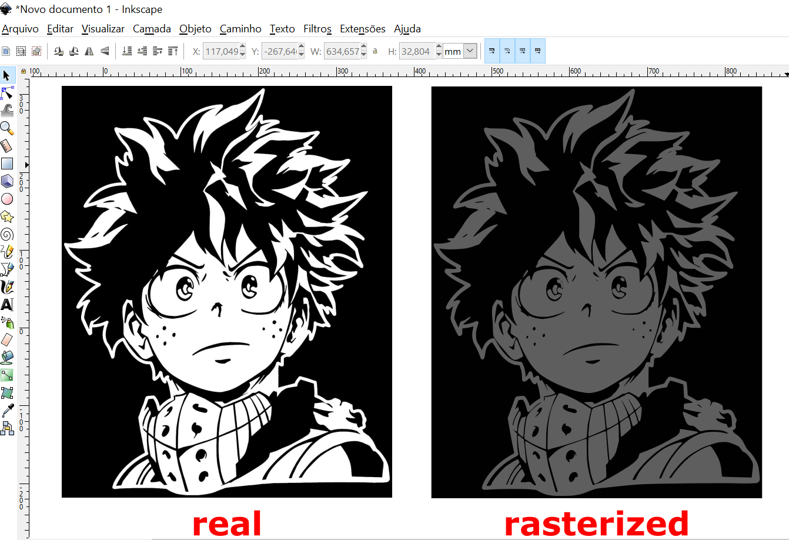
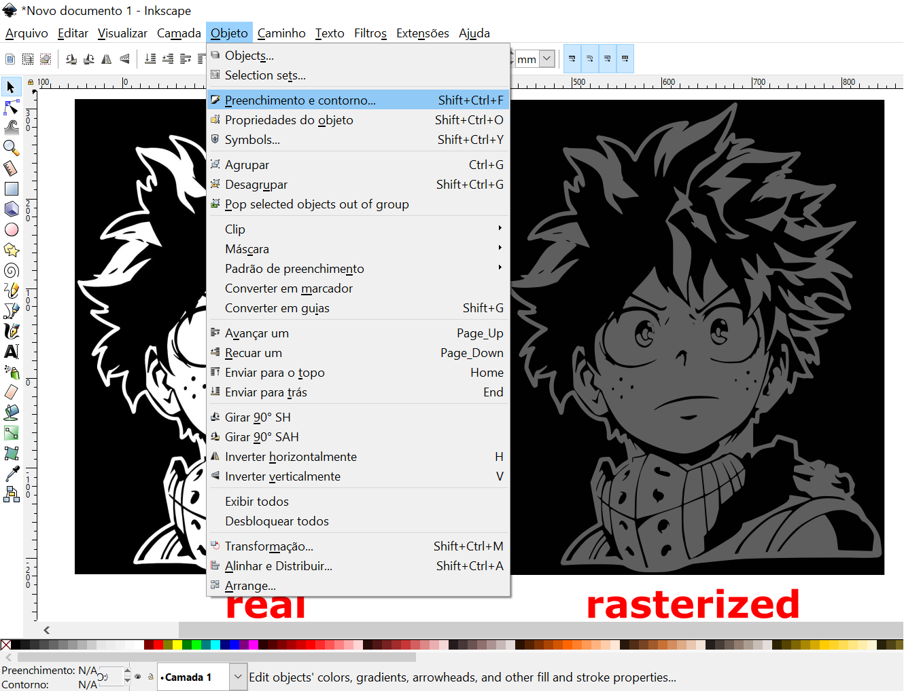
-
First, we need to remove the fill at tab Preencher (button sem cor). And after stroke it at tab Cor do Contorno (button cor uniforme). The result is below, and can be saved as DXF, SVG, PDF and others types files.
| Tab Preencher | Tab Cor do Contorno |
|---|---|
| 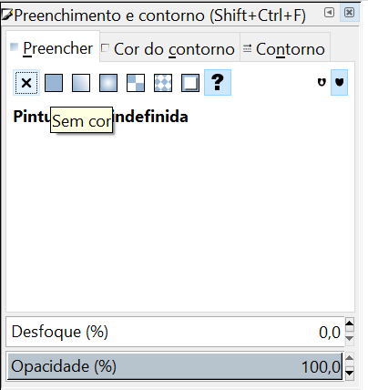 |  |
| Vectorized image |
|---|
| 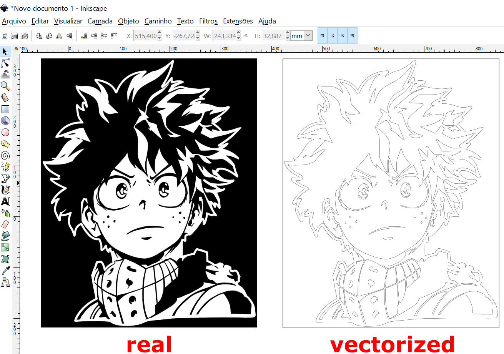 |
Here you can download my Inkscape file (.svg).
Gimp¶
Gimp was used to edit all images of this website. This software allows you modify images: cut, remove background, add or highlight informative itens and more.
Here a step by step how to remove a background of a photo:
-
Open the image in Gimp.
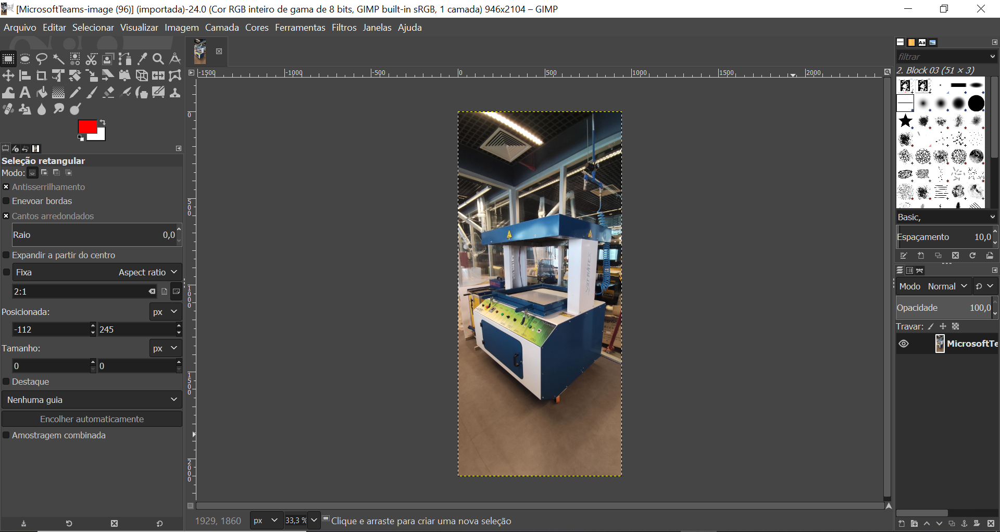
-
Select the tool Seleção Livre. The goal here is to contour the part of the image we'd like to leave at the board. The stroke is made point by point with the zoom support (Ctrl+Scroll mouse).

Tool Free Selection
3D software¶
In my professional life, I have already worked with some 3D software to model technical parts. Such as AutoCAD, Inventor and Fusion 360, all products of Autodesk. In the last year, I discovered a new one, called Tinkercad for simple designs. I used it to make a tutorial for exchange students of Insper. So, the information below are parts of it.
¶
Tinkercad¶
Tinkercad is a free online, easy-to-use app for 3D design, electronics, and coding too. The users can draw furniture, architectural scale models, assembling programmable electronic circuits, etc. It also has a Gallery, to see examples of projects visit the website.
Interface¶
This is the 3D project panel. Let’s know about its tools:
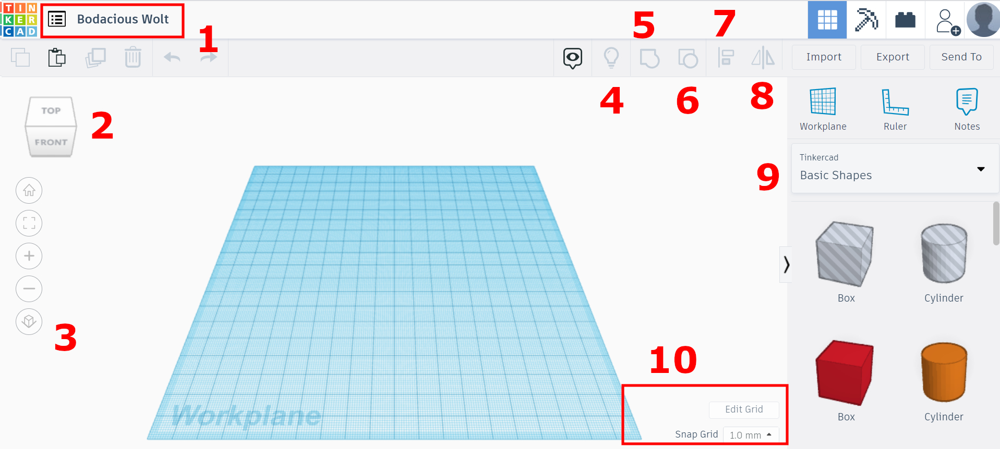
- With one click, you can change the name of the project;
- This cube allows you to rotate de camera or view side. It’ll help you to see all points of view in the project. Another way to do this is keeping the right mouse button pressed and drag the mouse;
- This menu allows you to control the camera. From the top to the bottom: “The home view”, when you click on it the workplane is moved to the position as showed in the picture above; “Selected view”, first select an object (with a click) and then use this button, the selected object will be fit in the view; “Zoom in”; “Zoom out” and switch between perspective and orthographic projection.
- To hide an object, click on it, then use Ctrl+H. This lamp icon makes all hidden objects visible again.
- Button number five can be used to group objects. Grouping shapes allows you to combine them to a single shape and to create cut-outs and holes. This represents the boolean “union” operation in Tinkercad. You can also use Ctrl + G for this operation;
- This button can be used to split up a previously defined group of shapes. You can also use Ctrl + Shift + G instead;
- Button number seven can be used to align objects;
- This last button allows you to mirror a shape in your scene;
- These are your basic shapes. You use them to create more complex shapes by creating cutouts and combining them into larger and more complex objects;
- You can change the grid with the tools in this area.
Testing¶
After knowing the tools, I decide to draw a Food Court.
To demonstrate how I designed the tables here is the step-by-step video:
Tinkercad 3D Model¶
-
Here you can download the STL file.
-
And you can access the Food Court in Tinkercad to use it.
¶
Fusion 360¶
I took a long time to design my final project because in each part I used to think about the processes of how to make it, what equipment or material I could choose or which one could be better. It was an exhausting assignment!
I used a lot of commands to design the whole project. Here, I'll show some of them and give some tips too.
With my sketch on hand, I started to design the main part of my project, the vase of plant. I looked for a little one that I have in my house and took its measurements. Thinking about the geometrical forms that make up the vase helped me to model it easier.
First sketch¶
- I created a new sketch, and drew a circle with the dimension of the vase's base. I chose the plane XZ, but I realized that it'd be better if I had chosen the XY (the same orientation of CNC machines).
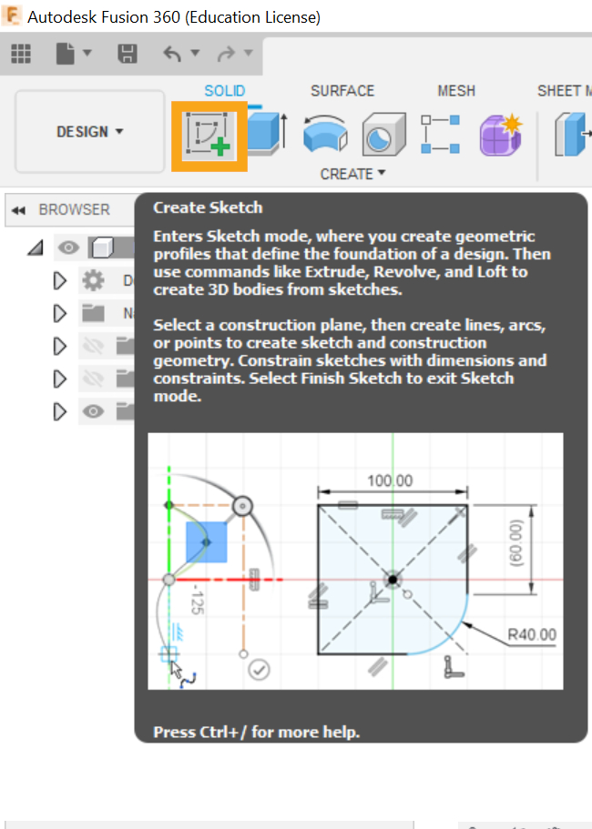
It's a good idea to put the middle of the model at the origin coordinates (0,0)!
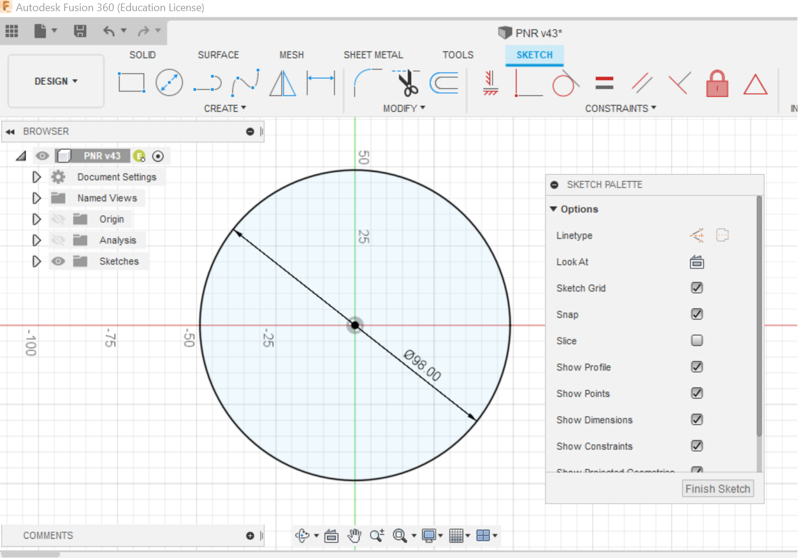
- I needed to model a cone with its top cut off, and the command Loft was perfect for that. To do this, were needed two profiles. One I already had (in the step above). The other, I generated on a new plane using the command Offset Plane.
- I followed the sequence above to design the entire vase, and used the command Shell to create a hollow cavity.
| 3D Model | Original Vase |
|---|---|
 |
- With the main part drawn I could make it as a reference for others parts. In this step, the plate was being built following the same angle of the body of vase. After, by the command Revolve
| The command Revolve | The result |
|---|---|
| 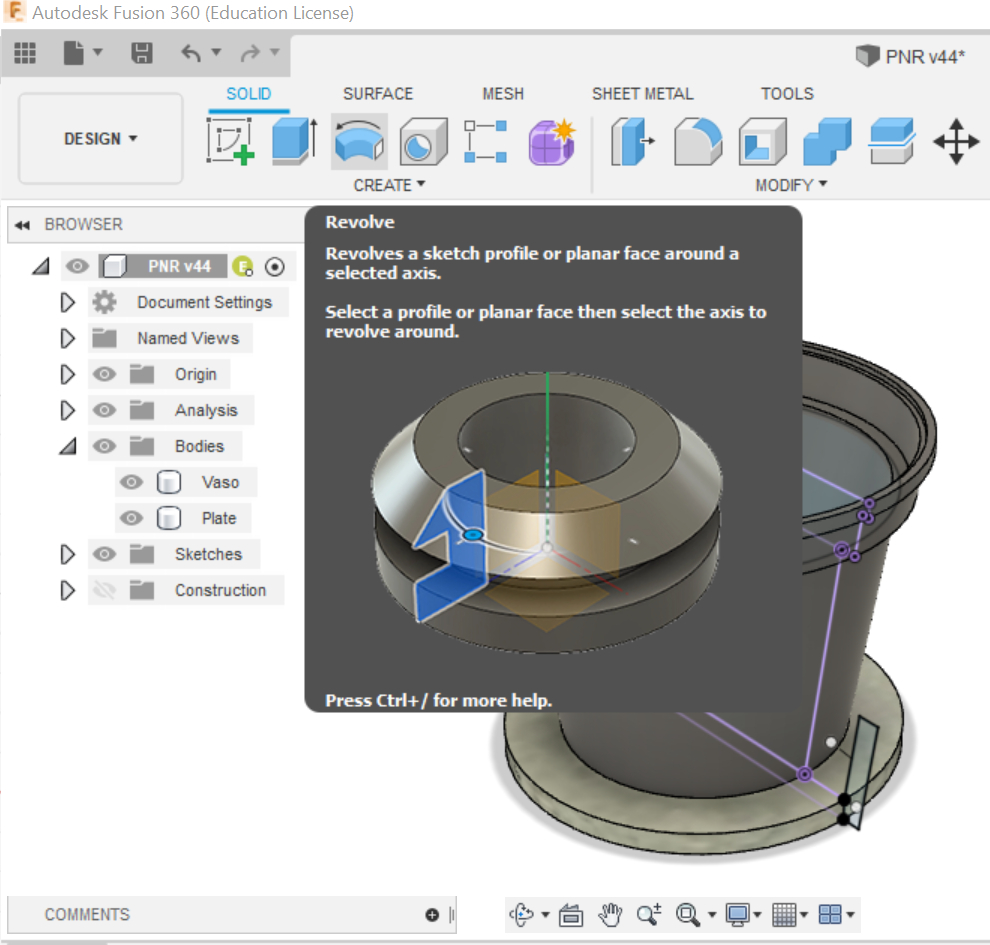 | 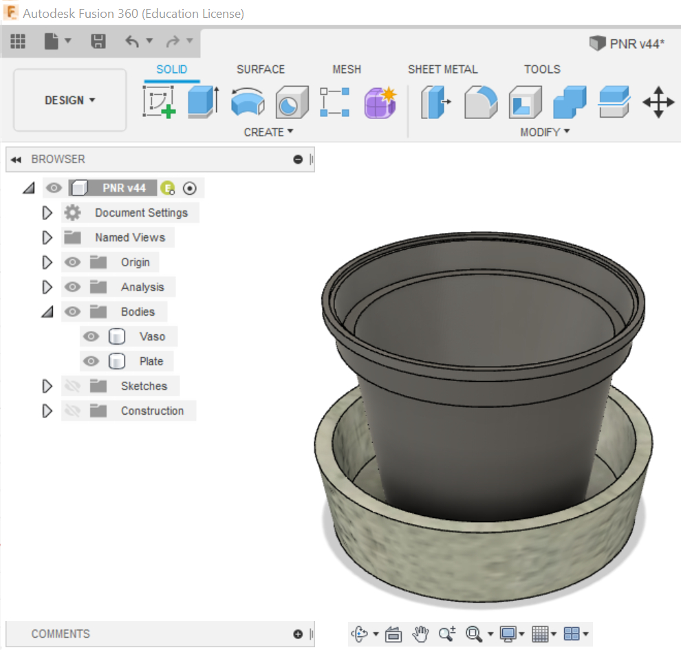 |
McMaster-Carr Component¶
- In the virtual PNR project, I used screws and nuts to fix its parts. It's not necessary to design them. Fusion has a 3D model library called McMaster-Carr Component, where we can seek to them. There, I pulled: screws M5x30mm, wing nuts and springs.
| Wing Nuts available | The ones I pulled |
|---|---|
| 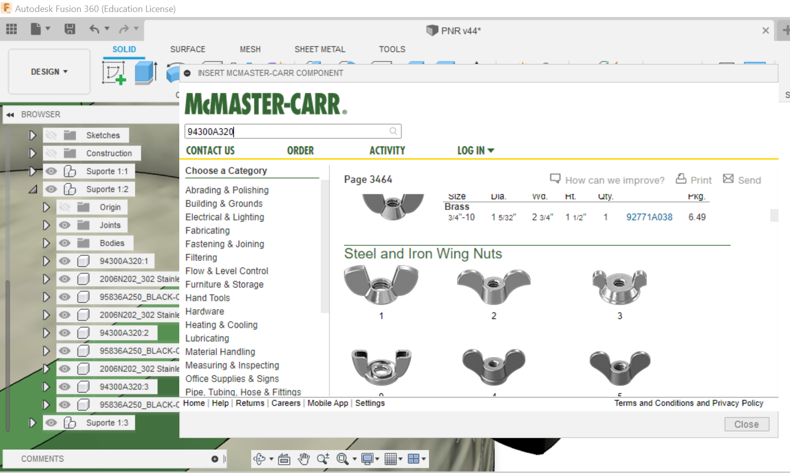 | 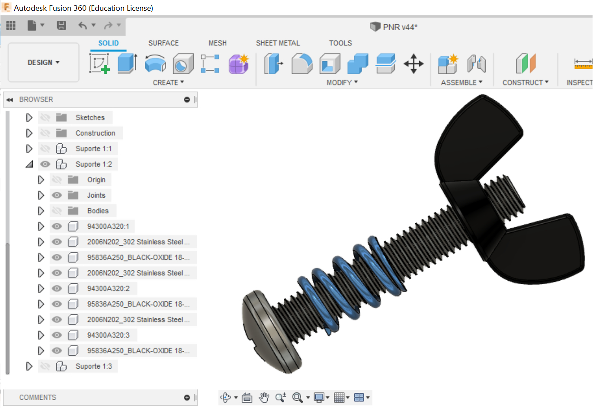 |
Another free 3D model library is the GrabCAD
It's an online community where people share their projects. I accessed it a couple of times. The first, I was looking for a example of water pump.
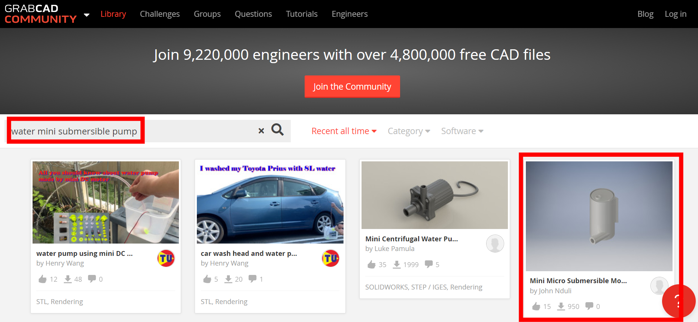
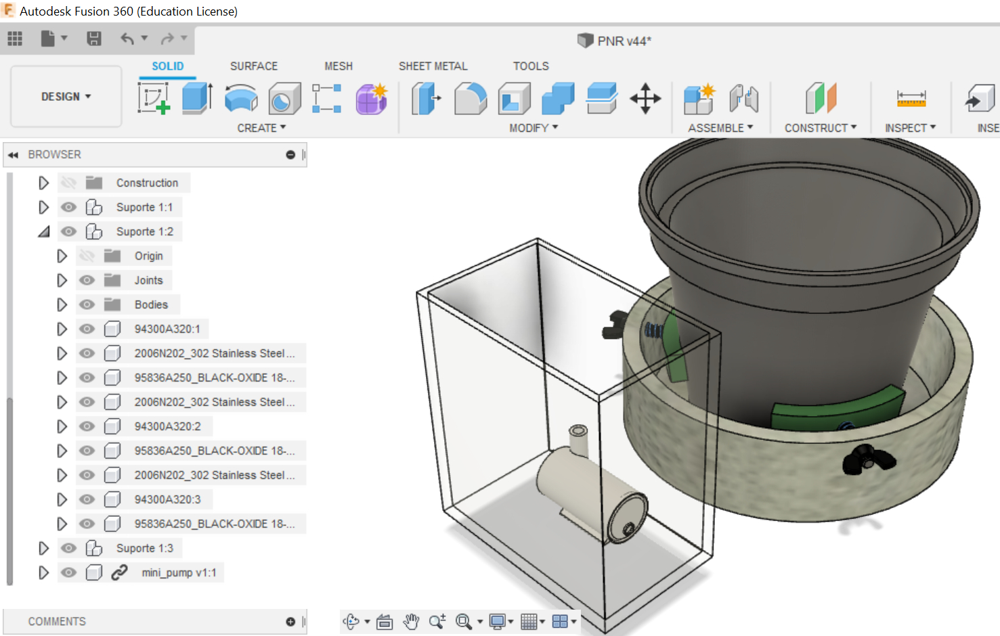
Changing Appearance¶
In Fusion, it's possible to atributte characteristics of materials for the parts. Press the letter A on the board, we can active the command Appearance. There're many types of materials, as metal, plastic, wood, and even concrete. Here, I aplied the concrete material in the part called Plate.
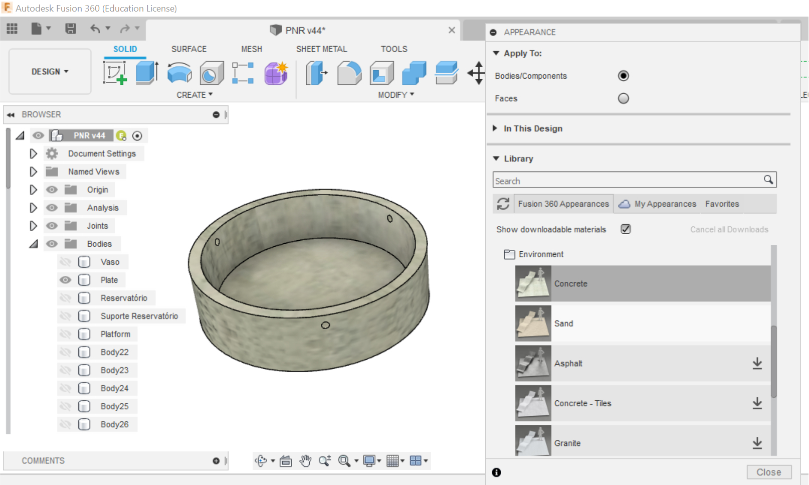
Tutorials¶
Some bodies I didn't have idea how to model them, so I searched online tutorials. In this example below, I followed step by step to build a wheel.
| Tutorial | My model |
|---|---|
Organization¶
There are many parts to my project. Because of this the Fusion browser became extensive, and I had a hard time recognizing which part I was modifying.
To reduce that I started to design small assemblies as components and after introduce them in the main assembly file. With it is faster to recognize and modify each group. Below I'm showing the single assemblies of Fixed Caster and Distance Sensor.


Fusion 3D Model¶
The 3D model of my final project:
You can download the Fusion file (.f3z) below: